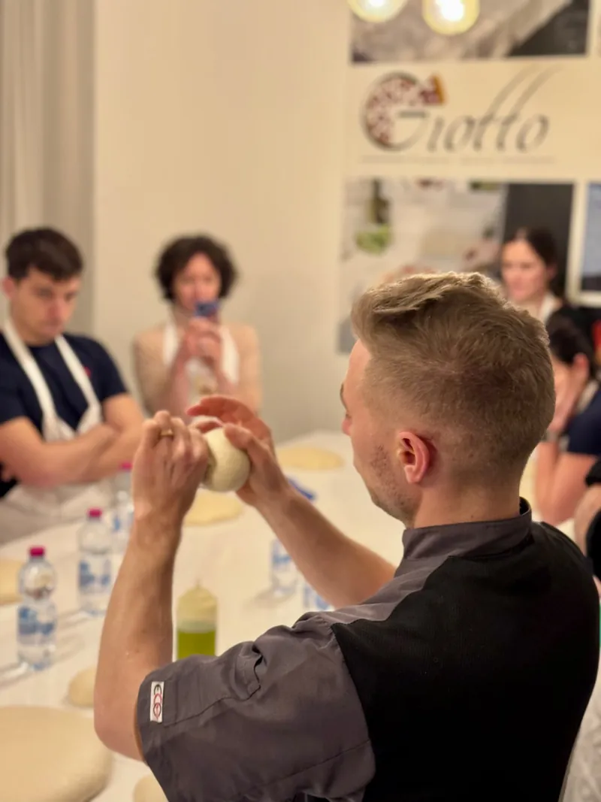
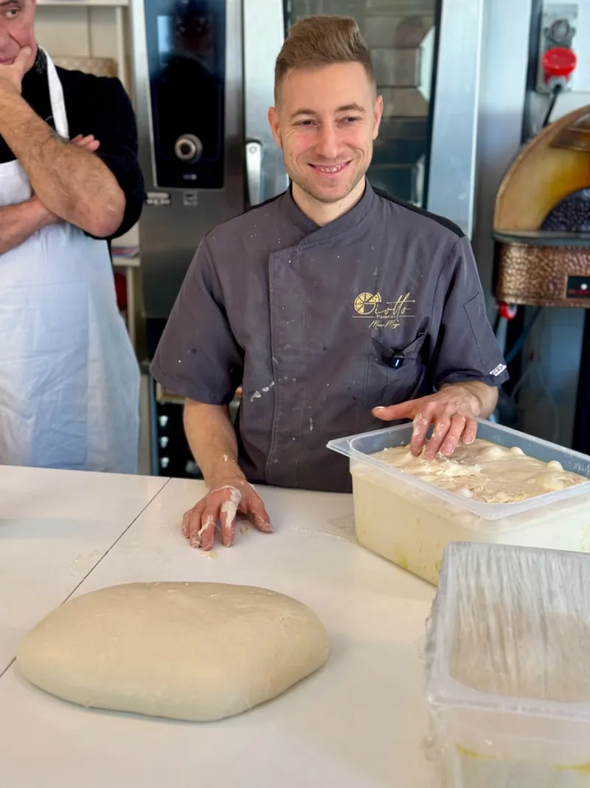
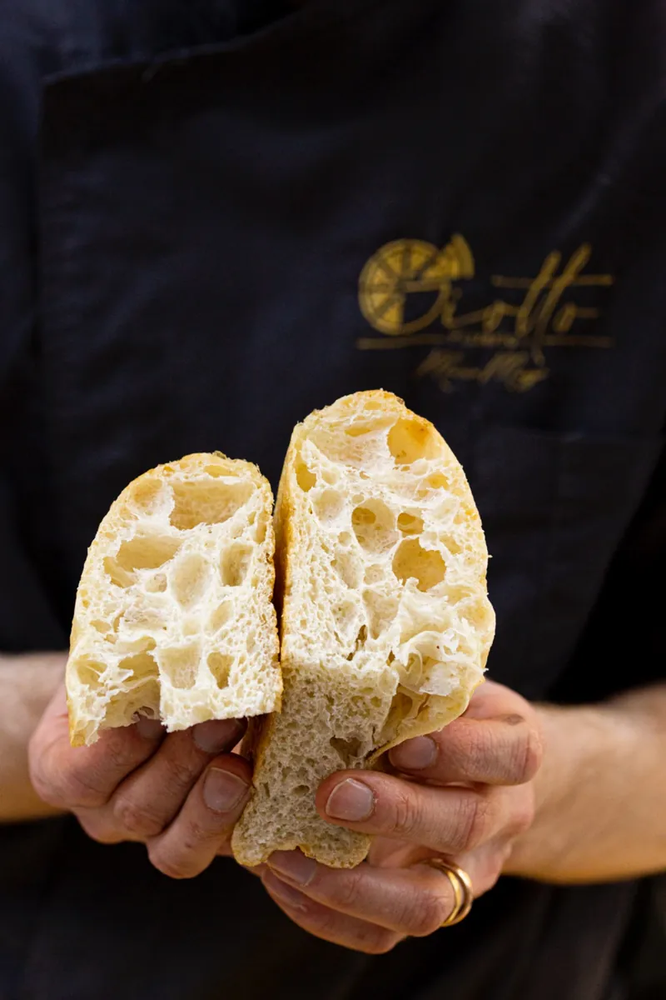
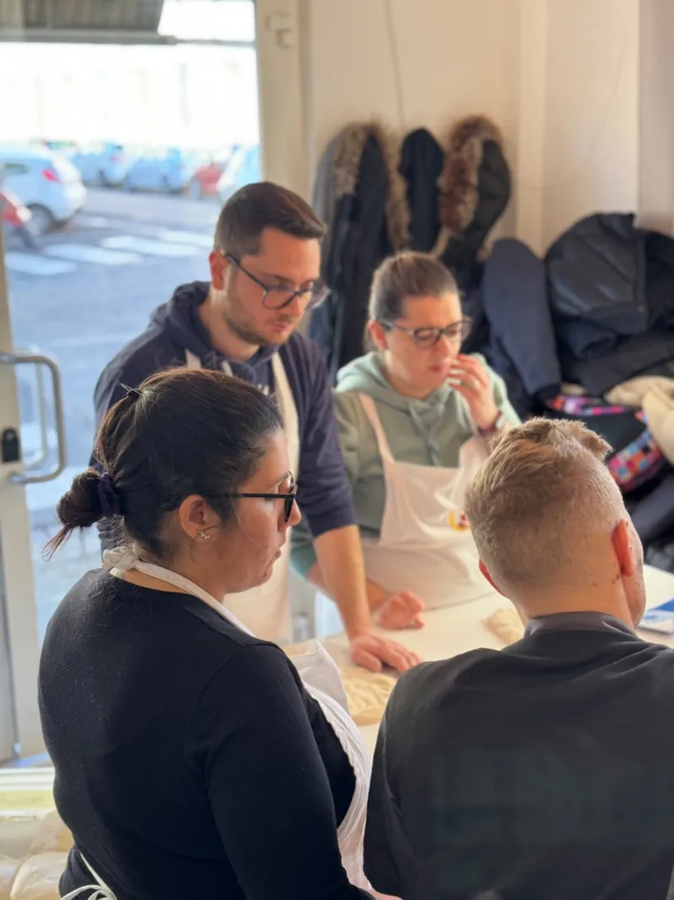

Diventa un vero pizzaiolo professionista
Un percorso costruito su di te: impari da Marco Manzi, fai pratica ogni giorno nelle nostre pizzerie e puoi iniziare a lavorare con noi, con un periodo di lavoro retribuito.
Non un corso qualsiasi, un mestiere
Il pizzaiolo è uno dei mestieri più antichi e amati, ma anche uno dei più difficili. Si impara solo lavorando, ogni giorno, accanto a chi lo fa bene.
Per questo abbiamo pensato un percorso diverso dalle classiche settimane in aula. Partiamo da un colloquio per capire da dove parti e dove vuoi arrivare, poi costruiamo il percorso su di te: la formazione tecnica con Marco Manzi, la pratica nei laboratori e nelle sale delle pizzerie Giotto, e infine la possibilità di iniziare un periodo di lavoro retribuito direttamente da noi.
Impari in un ambiente vero, con i ritmi, i forni e i clienti di una pizzeria premiata dalle guide più importanti d'Italia.

Tre fasi, dalla scuola al banco
Ogni fase dura quanto serve a te. Si passa alla successiva quando sei pronto.

1Formazione
Teoria e tecnica con Marco Manzi: farine, lieviti, impasti a breve e lunga lievitazione, stesura, farcitura e cottura nei diversi tipi di forno.

2Pratica in pizzeria
Lavori nei nostri laboratori e al banco delle pizzerie Giotto, accanto al team. Fai pratica sul servizio vero e impari a gestire i ritmi della sala.

3Lavoro retribuito
Al termine del percorso hai la possibilità di iniziare un periodo di lavoro retribuito direttamente nelle nostre pizzerie a Firenze.
Cosa imparerai
- Studio teorico e pratico di tutte le tipologie di forno e di impastatrici
- Studio degli ingredienti per le varie tipologie di impasto
- Preparazione dell'impasto a breve e a lunga lievitazione
- Uso delle celle frigorifere, del termometro e della bilancia
- Stesura a mano e farcitura dell'impasto
- Scelta del lievito: lievito di birra, lievito madre, tipi di lievitazione e maturazione
- Uso corretto di farine, olio, sale e zuccheri
- Apporto nutritivo del prodotto e ingredienti per celiaci e intolleranze alimentari
- Formazione dei panetti
- Gestione del servizio in pizzeria
Per chi vuole farne un lavoro
- Chi parte da zero e vuole imparare il mestiere del pizzaiolo
- Chi lavora già in cucina o in pizzeria e vuole fare il salto di qualità
- Chi vuole cambiare vita e trasformare una passione in professione
- Chi cerca un lavoro vero, non solo un attestato
Seguiamo pochi allievi alla volta, per poterli formare davvero e inserirli nel team. Le candidature vengono valutate con un colloquio.
Prima di candidarti
Quanto dura il percorso?
Dipende da te. Dopo il colloquio definiamo insieme la durata di ogni fase in base alla tua esperienza di partenza e ai tuoi obiettivi.
Quanto costa?
Il percorso è personalizzato, quindi anche il costo. Te lo indichiamo dopo il primo colloquio, insieme al programma.
Serve esperienza?
No. Puoi partire da zero oppure avere già esperienza: il percorso viene costruito sul tuo livello.
Dove si svolge?
A Firenze, nei laboratori e nelle pizzerie Giotto. La scuola ha sede in via Francesco Veracini.
Il lavoro retribuito è garantito?
Alla fine del percorso valutiamo insieme il tuo livello. Chi è pronto può iniziare un periodo di lavoro retribuito direttamente nelle nostre pizzerie.
Inizia il tuo percorso da pizzaiolo
Compila il modulo: ti ricontattiamo su WhatsApp per fissare un colloquio con il nostro team.

Candidati al percorso
Raccontaci chi sei. Ti ricontattiamo per un colloquio e costruiamo il percorso insieme.
Richiesta pronta
Abbiamo ricevuto i tuoi dati. Se WhatsApp non si è aperto, tocca il pulsante qui sotto per inviarci il messaggio.
Apri WhatsApp